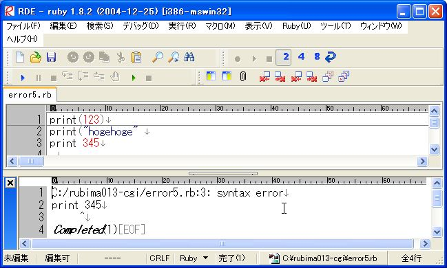
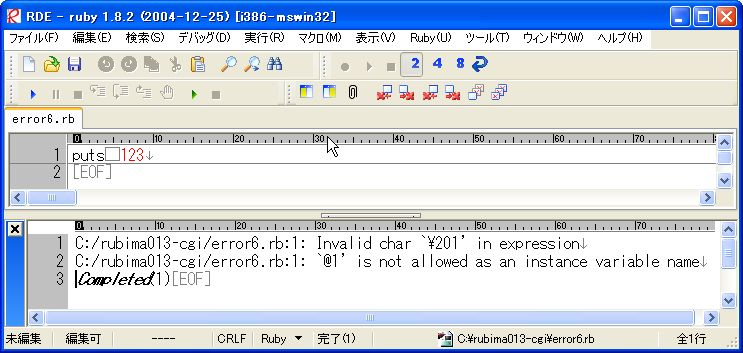
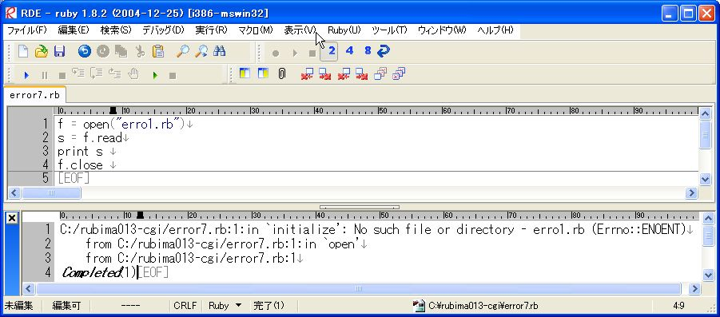

Ruby ビギナーのための CGI 入門 【第 3 回】 ページ 2
このページの目次
Ruby のエラーについて
前置きはこれくらいにして、 ここから Ruby プログラムを書く時に出会うエラーに ついて見ていきます。
変数の間違い
筆者はタイピングが下手なので、 しばしばキーを打ち間違えます。 そんな時に起こるエラーが変数名の間違いとメソッド名の間違いです。 変数名やメソッド名を間違えたプログラムを作ってみて、 それを実行してみましょう。
最初に変数名を間違えてみます。
str = "rubima"
print st
このプログラムを RDE で実行すると、
下のようなメッセージが表示されます。

C:/rubima014-cgi/error1.rb:2: undefined local variable or method `st' for main:Object (NameError)最初の「C:/rubima014-cgi/error1.rb:2」 は C:/rubima014-cgi/error1.rb というファイルの 2 行目が間違っていますよ という意味です。 そのつもりでプログラムをよく見ると、 1 行目では str という変数を使っているのに 2 行目では st という変数を使っています。
error1.rb の中では一度も st という変数を使ったことがないので、 2 行目を実行する時に Ruby がそんな変数は知らないとエラーを出して終了してしまったわけです。 エラーメッセージの 「undefined local variable or method `st’」 は知らない変数やメソッドが使われていますよという意味です。
修正する方法は正しい変数名を使うことです。 この場合なら st を str に変えれば良いわけです。 エラーメッセージの意味が分かれば修正は簡単ですね。
メソッド名の間違い
次にメソッド名を間違えてみましょう。
priny "hogehoge"

C:/rubima014-cgi/error2.rb:1: undefined method `priny' for main:Object (NoMethodError)最初の「C:/rubima014-cgi/error2.rb:1」はもう分かりますね。 C:/rubima014-cgi/error2.rb の 1 行目にエラーがありますという意味です (1 行プログラムなので、1 行目にエラーがあるのは自明ですが…)。
では、次の「undefined method `priny’」はどういう意味なのでしょうか？ このメッセージは priny なんてメソッドは知りませんという意味です。 知らないメソッドが使われると、 Ruby は上記のようなエラーメッセージを出します。
この例では print で hogehoge を表示させようとして、 最後の「t」を打つ時に間違って隣の「y」を打ってしまい、 上のようなエラーになってしまいました。
これも修正は簡単で、priny の最後を t に変えて print にすれば修正は完了です。
ところで、このエラーメッセージは先ほどと違って「local variable or」がありません。 余裕のある方は、この違いが何故起きるのか考えてみて下さい。
引数の間違い
引数の数が合っていない時や 引数の値が間違っている時にもエラーが出ます。
さきほど to_s というメソッドを紹介しました。 これはオブジェクトを文字列に変換するメソッドで、 通常引数は付けられません。 間違って引数を付けてしまった場合、どうなるか見てみましょう。
print "aaa bbbb ccccc".to_s(2, " ")

エラーメッセージは下記のようになります。
C:/rubima014-cgi/error3.rb:1:in `to_s': wrong number of arguments (2 for 0) (ArgumentError)このメッセージは to_s の引数は 0 個のはずなのに、 引数が 2 個も付いているという意味です。 通常ならこんなエラーは起こさないと思いますが、 引数の数が増えてくると引数の数や順番がごちゃごちゃになってきて、 間違えてしまいます (引数の数が 4 や 5 というメソッドもあります)。 その他、メソッド名そのものを間違えてしまう場合もありますので、 本当に正しいメソッドを使っているのかも確認してみて下さい。
今回のエラーも修正は簡単です。 引数の部分を消すか、 正しいメソッド名に変更します。
文法エラー
文法エラーといってもさまざまなものがあります。 その中でも end 忘れ、括弧の閉じ忘れなどは比較的遭遇しやすいエラーだと思います。
i = rand(1)
if i == 0
print "OK: "
puts i
else
print "NG: "
puts i
puts "BYE"
puts "Program END"

このプログラムを実行すると、
C:/rubima014-cgi/error4.rb:10: syntax errorと表示されます。 C:/rubima014-cgi/error4.rb:10 と表示されているので、 10 行目に問題があると思うかもしれませんが、 実際は 8 行目に end を付けていないことが原因です。 通常 if 文を使ったら、end で閉じないといけません。
次に引数の「)」忘れについて見てみましょう。
print(123)
print("hogehoge"
print 345

2 行目で閉じ括弧を打ち忘れているため、 どこまでが print の引数か分からず、エラーが起きています。 2 行目の末尾に「)」を入れると、このエラーは修正出来ます。
上記の 2 つのエラーは実際にエラーのある行と Ruby のエラーメッセージの行が一致しないので、 どこが原因なのか見つけにくいと思います。 プログラムをよく見れば修正は可能ですが、 なかなかエラーのある場所を見つけられないこともあります。 上の 2 つと同じようなエラーとしては 文字列の「”」、Array の「]」、 Hash の「}」忘れ等があります。
全角空白
これも見つけるのが難しいエラーです。 筆者も一度経験したことがありますが、 なかなかエラーの原因が見付けられませんでした。
puts 123

RDE で error6.rb を開いてプログラムの内容を見ると分かりますが、 print と 123 の間に全角空白があり、 Ruby が全角空白をどう扱って良いか分からないために エラーとなります。
Ruby プログラムを書く際、基本的に文字列以外では 全角空白は使えないと思った方が良いでしょう。 あらかじめ全角空白を入力出来ないように IME (日本語を入力するためのソフト) の設定をしておくと、このエラーに悩まされることがありません。
ファイルの扱い
最後はファイルの扱いについてです。 例えば、ファイルを開く時にファイル名を間違えるとどうなるのでしょうか？
f = open("erro1.rb")
s = f.read
print s
f.close

「No such file or directory - erro1.rb 」というエラーメッセージが出ています。 これは erro1.rb なんてファイルは無いという意味です。 error1.rb というファイルを開くために open メソッドに error1.rb を引数に指定したつもりだったのですが、 間違えて erro1.rb を指定したためエラーになってしまいました。
修正は 1 行目の文字列を error1.rb に変えるだけです。 これも引数間違いの一種なのですが、 ファイルの関るエラーではしばしば専用のエラーメッセージが現れます。
まとめ
ここでは色々な Ruby プログラムのエラーを紹介しました。 紹介したプログラムはいずれも短いので修正は簡単でしたが、 長いプログラムになるとエラーのある場所を特定するのも難しくなってきます。
そうした時に Ruby の出すエラーメッセージは有用です。 メッセージは英語ですが、 きちんと内容を理解してプログラムを見直せば、 それだけで簡単にエラーの原因を見つけられることもあります。
プログラムの内容を見直すことはもちろん重要ですが、 エラーメッセージの内容を把握することも エラーの修正には役立ちます。
p メソッドについて
おまけで p というメソッドについて説明します。 p はオブジェクトを表示させるメソッドで、 基本的には print, puts の仲間です。
print, puts との違い
厳密に p と print, puts の違いを説明すると難しいので、 ここでは使い分けについてだけ説明します。
大まかに言えば p はちょっとデータを見たい時や エラーを探している時に使い、 print や puts は CGI プログラムなどで きちんとデータを表示させたい時に使います。
試しに p を使ってみましょう。 まずは下の 2 つを試してみて下さい。
p [1,2,3,4]puts [1,2,3,4]p の方はちゃんと Array に似た形で表示されますが、 puts の方は中のデータだけが表示されますね。 多くの人にとって最初の形の方が見やすいと思います。 このように p は見やすい形でオブジェクトを整形して 表示してくれるメソッドなのです。
次の例を見てみましょう。 この例は CGI などで文字列を表示させる時に p を使ってはいけないことを示すために用意しました。
p "るびま"puts "るびま"実行してみれば分かりますが、 p “るびま” では “るびま” が 日本語で表示されません。 日本語を使えない環境でも “るびま” を表示させるために p が “るびま” をあるルールに則って変換してから表示させています。
でも、普通は日本語で “るびま” を表示させて欲しいですよね。 そういう時には今までどおり print や puts を使うことになります。
このように p や print, puts には一長一短があって、 常にどちらかをを使えば良いということはありません。 状況に応じて使い分けましょう。
p とプリントデバッグ
実際に p をエラーの修正 (デバッグ) に利用してみましょう。 ここではプリントデバッグと呼ばれる手法を行います。
プリントデバッグというのは プログラムの各行にデータを表示させる行を加え、 それがきちんと表示されるかを確かめる方法です。 今回はデータを表示させる際に p を利用します。
下に rand を使ったプログラムを載せます。 このプログラムは変数 a, b の値の大小で、 メッセージが変わるようになっています。 しかし、下のプログラムを何回実行しても 7 行目のメッセージしか表示されません。
error8.rb
a = 2
b = rand(3)
if b > a
puts "b is larger than a."
else
puts "b is not larger than a."
end
原因を調べるために p を使ってプリントデバッグを行います。 今回は if 文の前と中に p で変数 a, b の値を 表示させてみます。
error8-p.rb
a = 2
b = rand(3)
p a, b
puts "-------------------"
if b > a
p a, b
puts "b is larger than a."
else
p a, b
puts "b is not larger than a."
end
このプログラムを何回か実行させると分かりますが、 変数 b はいつも 2 以下です。
これで原因がわかったでしょうか？ 間違いの原因は 2 行目の rand(3) です。 rand は引数未満の整数をランダムに返すので、 今回の場合 rand の返り値は 0, 1, 2 のいずれかになります。 その結果、常に b が a より大きくならないので、 error8.rb の 5 行目が表示されません。
このように p を使って変数の値を調べると、 エラーの原因を突き止めることが出来ます。 この方法は print や puts でも利用出来ますが、 p の方がメソッド名が短いので、簡単にプリントデバッグを試すことが出来ます。